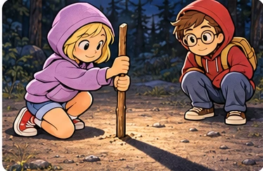
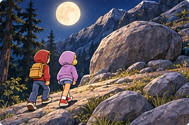
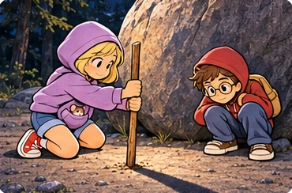
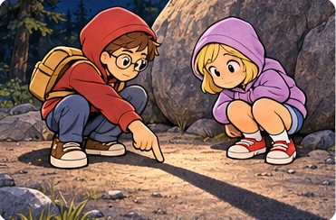
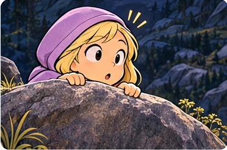
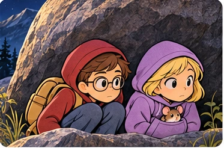

Chapter 7 · Part 2 — To the East
Annie pushed the stick into the ground.
“The stick’s shadow looks like it’s more than six inches,” said Jack. “What do you think?”

“It looks like it,” said Annie.
“Okay. Then that means the shadow’s pointing east,” said Jack.
“Neat,” said Annie.
“So that way is east!” Jack pointed to a new direction. “At least I hope it is.”
“We’re real ninjas now!” said Annie.
“Yep,” said Jack. “Maybe we are. Come on!”
They took off—heading east, they hoped.
Soon they were out of the pine woods and walking down the rocky mountainside. They moved slowly from rock to rock. Finally they rested against a giant rock.

“Let’s check our direction again,” said Jack.
Annie stuck another stick into the dirt.

“There,” he said. He pointed to the shadow on the ground. “That way—”

Annie peeked over the rock, down the mountain.
“Yikes,” she said softly.

Jack looked, too. His heart nearly stopped.
There were flames of fire coming up the mountain. The samurai!
Jack and Annie ducked behind the rock.
Squeak, said the mouse.

“Quiet, Peanut,” said Annie.
Jack reached into his pack. He pulled out the ninja book.
“I hope something in here can help us,” he said.
Jack flipped through page after page until he found what he was looking for. It was a picture of warriors wearing bamboo armor. They were holding swords. He read:
The samurai were fierce Japanese fighters. They carried two swords to cut down their enemies.
Annie tapped Jack on the shoulder.
Jack looked at her.
She pointed up the mountain.
A figure was coming down toward them. He was very near.
In the moonlight, his bamboo armor was shining. His two swords were gleaming.
It was a samurai warrior!